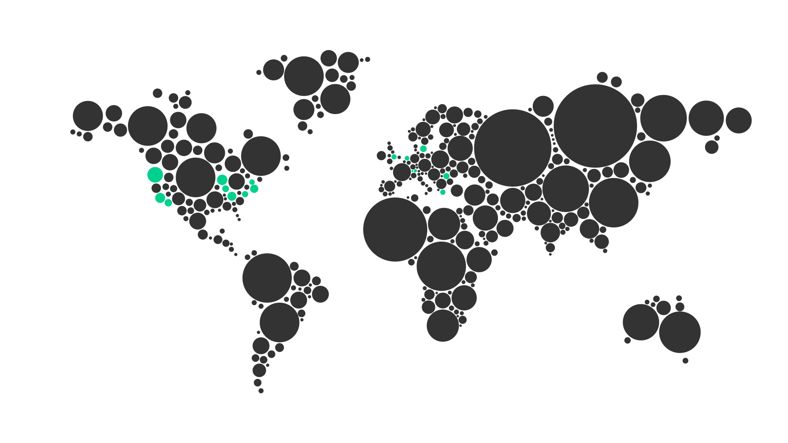

The
specialized
data analytics team
Bringing
clarity
to your Microsoft Fabric projects
Make your data work for you:
we build data-driven applications
We have the necessary tools and processes to turn your data into valuable products, such as platforms to track investments, monetize datasets, and transform Excel models into user-friendly apps.
Our data-driven solutions make data a part of the business logic, allowing for deeper analysis and insights. We help productize your services, particularly those with large amounts of data like financial, accounting, and analytical services.
Increase your SaaS value with data that is actually used by your users
We Build Contextual Analytics That Makes Reporting Useful and Customers Turning Back For Insights
We help you unlock the power of data in existing third party platforms and startup products. By embedding customized data visualizations into these platforms, we empower users to make sense of complex data and make informed decisions.
Our contextual analytics solution makes data readily available and interpretable without requiring users to export their data, therefore increasing the overall value of the platform.
Check out our demo platform that uses contextual analytics - embedsy.io
Visualize what you couldn’t before
We Build Custom-Made Visualizations That Help You Tell Your Story In A Unique Way
We design custom data visualizations that provide new and innovative ways to analyze and interpret your data. We help our clients gain valuable insights into their business operations, allowing them to make more informed decisions.
Whether you need a dashboard that provides real-time performance metrics or a custom data visualization that highlights key trends and patterns, we have the expertise to help you unlock the full potential of your data and use it to drive business outcomes.
Become a data-driven and data-augmented organization with Power BI
We Help Organizations Build Their Power BI. Everything there is in Power BI.
We are experts in Power BI, one of the most powerful business intelligence tools available. We develop intuitive and user-friendly data models tailored to your exact business needs, allowing you to gain deeper insights into your data and make more informed business decisions.
We are experts at designing and developing custom visuals, building semantic models and managing Power BI tenants, ensuring that your data is secure and properly managed. Whether you are looking to improve your reporting, gain better insights or analyze trends, we have the experience and processes to help you achieve your goals using Power BI.
Services and products
You benefit by
- Transforming your idea into a product fast
- Taking your product to market fast
we help with
- Designing and implementing full-fledged applications that use your data
- Transforming those complex Excel spreadsheets into web apps
You benefit by
- Increasing the “stickyness” of your SaaS
- Increasing revenues from the additional created value generated from your data
- Using your data to its full potential
- Empowering every user, not only the C-suite, with insights that matter to them
- Putting your data to work faster than the competition
we help with
- Embedding programmatic visualizations that use your data and communicate with your application
- Designing custom interactions between your application and data insights
- Designing and building the data semantic model for your SaaS
You benefit by
- Creating intellectual property
- Expressing your values or insights in unique, eye-catching ways
- Visualizing what you couldn’t visualize before
we help with
- Designing and developing custom visuals for Power BI using D3 & Typescript. Here are the visuals we already created:
- Multi Line Chart with Tooltips
- Category Comparison Bar Chart - Designing and developing personalized visuals for Power using BI Samurai’s HTML Visual and Deneb.
You benefit by
- Understanding & trusting your data
- Making decisions with data you trust
- Having a complete overview over your data landscape
- Staying ahead of the competition by arriving to insights faster
- Leveraging your data to achieve your business goals
- Enabling your workforce with the facts they need to make data-driven decisions
we help with
- Building reports
- Building semantic models
- Managing Power BI tenants
- Deploying Power BI apps and template apps
- Migrating from other BI platforms to Power BI
- Implementing Power BI Embedded
- Building reports with Report Builder
- Building Power BI custom visuals
- Guidance on Power BI security, governance & licensing

You benefit by
- Transforming your idea into a product fast
- Taking your product to market fast
we help with
- Designing and implementing full-fledged applications that use your data
- Transforming those complex Excel spreadsheets into web apps
You benefit by
- Increasing the “stickyness” of your SaaS
- Increasing revenues from the additional created value
- Using your data to its full potential
- Empowering every user, not only the C-suite, with insights that matter to them
- Putting your data to work faster than the competition
we help with
- Embedding programmatic visualizations that use your data and communicate with your application
- Designing custom interactions between your application and data insights
- Building custom
You benefit by
- Creating intellectual property
- Expressing your values or insights in unique, eye-catching ways
- Visualizing what you couldn’t visualize before
we help with
- Designing and developing custom visuals for Power BI using D3 & Typescript. Here are the visuals we already created:
- Multi Line Chart with Tooltips
- Category Comparison Bar Chart - Designing and developing personalized visuals for Power using BI Samurai’s HTML Visual and Deneb. Here are two visuals we created with HTML:
- Recruitment Workflow Diagram
- Survey Bar Chart with Scores
You benefit by
- Understanding your data
- Making decisions with data you trust
- Having a complete overview over your data landscape
- Staying ahead of the competition by arriving to insights faster
- Leveraging your data to achieve your business goals
we help with
- Building reports
- Building semantic models
- Managing Power BI tenants
- Deploying Power BI apps and template apps
- Migrating from other BI platforms to Power BI
- Implementing Power BI Embedded
- Building reports with Report Builder
- Building Power BI custom visuals
- Guidance on Power BI security, governance & licensing
Our Team
Vlad MihanȚa
CEO AND FOUNDER
Coming from an entrepreneurial family, I’ve always wanted to have my own business. Stories of Data started out of my fascination with data. The fact that facets of the world can be represented and understood through data still amazes me, after 8 years in the industry.
With Stories of Data I strive to understand and express my understanding of the data we analyze in an accurate and beautiful way for everyone we work with.

irinel cristea
DATA ANALYST
My journey with data began during my studies in statistics and over the past years, I’ve turned that passion into a career. I’ve worked on everything from building reports, planning targets, forecasting sales using machine learning techniques to building data pipelines and BI solutions. Now, I’m focused on BI development and data engineering and while I’m skilled with several BI tools, now Power BI is my go-to. I enjoy doing the dirty work: taking raw, messy data, shaping it into clean pipelines, and delivering beautiful, insightful views - with a strong focus on user experience.
Testimonials

We have worked together for 4 years now. To be able to develop a professional online relationship with someone that has brought us such efficiency in our process is remarkable. We started out needing someone to look at what we do from a new angle, a fresh start. Vlad has been able to offer deep technical expertise as well as a talent for design. The result has been a product that has exceeded my expectations. He is very capable, proficient and when our requests have exceeded his knowledge, he has pushed himself to continue to learn and provide options for our needs.

Jess Cary
I have been working with Datanauts since 2017. From a short term independent contractor to a long term solution, Datanauts have become an integral part of our US-based team. It started needing help on an Excel spreadsheet and has blossomed into a data/marketing/logistic/jack-of-all-trades relationship for our company. I could never have imagined how our business relies on Datanauts – and – now I can’t imagine life without the team.

The reasons why I personally enjoy working with Vlad are the same ones that made his last assignment with Flow Traders a success. He communicates very well and also listens attentively to his client’s needs. He knows what he can deliver and always sticks to his commitments while going the extra mile. He also learned very quickly what the divers group of traders needed from him and made this project work despite very little guidance provided. I highly recommend Vlad Mihanta to anyone who wants to have the work done right the first time. He always delivers!

We have worked together for 4 years now. To be able to develop a professional online relationship with someone that has brought us such efficiency in our process is remarkable. We started out needing someone to look at what we do from a new angle, a fresh start. Vlad has been able to offer deep technical expertise as well as a talent for design. The result has been a product that has exceeded my expectations. He is very capable, proficient and when our requests have exceeded his knowledge, he has pushed himself to continue to learn and provide options for our needs.
Jess Cary
I have been working with Stories of Data since 2017. From a short term independent contractor to a long term solution, Stories of Data have become an integral part of our US-based team. It started needing help on an Excel spreadsheet and has blossomed into a data/marketing/logistic/jack-of-all-trades relationship for our company. I could never have imagined how our business relies on Stories of Data – and – now I can’t imagine life without the team.
The reasons why I personally enjoy working with Vlad are the same ones that made his last assignment with Flow Traders a success. He communicates very well and also listens attentively to his client’s needs. He knows what he can deliver and always sticks to his commitments while going the extra mile. He also learned very quickly what the divers group of traders needed from him and made this project work despite very little guidance provided. I highly recommend Vlad Mihanta to anyone who wants to have the work done right the first time. He always delivers!
We have worked together for 4 years now. To be able to develop a professional online relationship with someone that has brought us such efficiency in our process is remarkable. We started out needing someone to look at what we do from a new angle, a fresh start. Vlad has been able to offer deep technical expertise as well as a talent for design. The result has been a product that has exceeded my expectations. He is very capable, proficient and when our requests have exceeded his knowledge, he has pushed himself to continue to learn and provide options for our needs.
Jess Cary
I have been working with Datanauts since 2017. From a short term independent contractor to a long term solution, Datanauts have become an integral part of our US-based team. It started needing help on an Excel spreadsheet and has blossomed into a data/marketing/logistic/jack-of-all-trades relationship for our company. I could never have imagined how our business relies on Datanauts – and – now I can’t imagine life without the team.
The reasons why I personally enjoy working with Vlad are the same ones that made his last assignment with Flow Traders a success. He communicates very well and also listens attentively to his client’s needs. He knows what he can deliver and always sticks to his commitments while going the extra mile. He also learned very quickly what the divers group of traders needed from him and made this project work despite very little guidance provided. I highly recommend Vlad Mihanta to anyone who wants to have the work done right the first time. He always delivers!

Get in touch
Let`s talk about what you`re hoping Fabric can do for you.
Bring us your situation. We will tell you honestly whether Fabric fits, what it will take, and what you can expect from working with us.